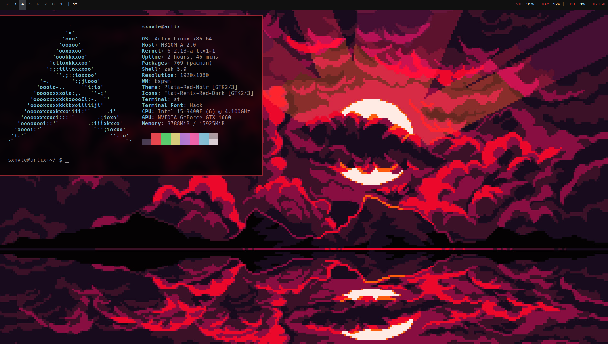

My Desktop
As i said i use Artix Linux as my daily driver. I am using BSPWM on it. My desktop is simple but it is efficient for me. Dotfiles: https://github.com/sxnvte/dotfiles

My Hardware
PC: CPU: Intel i5-9400F | GPU: Nvidia GeForce GTX 1660 | 16GB RAM DDR4Periphery: Mouse: Roccat Kain 100 Aimo | Keyboard: Redragon K530 | Audio: Presonus Audiobox USB96, Razer Kraken X, Presonus Eris 3.%